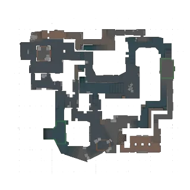
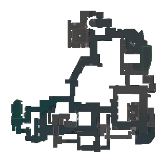
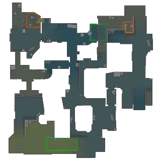
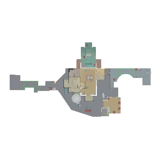
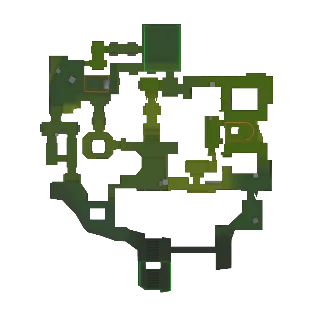
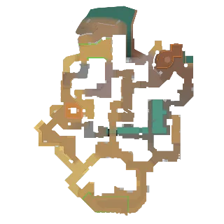
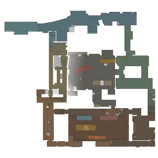
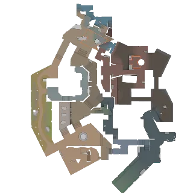
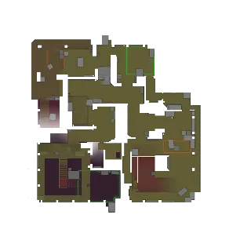
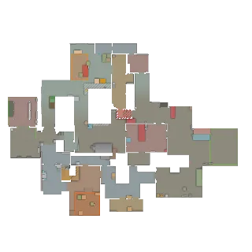

DemReview
Разбор привычек одного игрока по демке CS2 Read one player's habits from a CS2 demo
Куда он ходит, какие гранаты кидает, как реагирует на ситуацию в раунде — и какие решения повторяются настолько часто, что их можно предсказать. Where they go, which grenades they throw, how they react to the situation in a round — and which decisions repeat often enough to be predictable.
- Бесплатно и open sourceFree and open source
- Работает офлайнWorks offline
- .NET ставить не нужноNo .NET install needed
- Русский и английскийEnglish and Russian
О программеAbout
Одна демка — один игрок — его привычкиOne demo, one player, their habits
DemReview — десктопное приложение для анализа поведения конкретного игрока по демке Counter-Strike 2 (.dem). Выберите игрока — и все разделы покажут только его: маршруты, гранаты, дуэли, урон и решения в каждом раунде.
DemReview is a desktop app that analyzes how one specific player behaves in a Counter-Strike 2 demo (.dem). Pick a player and every section shows only them: routes, grenades, duels, damage and decisions in each round.
Программа ищет то, что повторяется: в каких условиях (сторона, закупка, счёт) игрок принимает какое решение — и честно показывает, насколько уверенным можно быть, ведь одна демка — это малая выборка.
It looks for what repeats: under which conditions (side, buy, score) the player makes which decision — and is honest about how confident you can be, because one demo is a small sample.
Пригодится, чтобы изучить соперника перед матчем, разобрать свою игру или помочь тиммейту увидеть его предсказуемые привычки.
Use it to scout an opponent before a match, review your own play, or show a teammate their predictable habits.
Пример из профиля игрокаExample from a player profile de_mirage
На T при закупке «фулл-бай» в 7 из 9 раундов идёт TSpawn → SideAlley → TopofMid On T (full buy): in 7 of 9 rounds takes TSpawn → SideAlley → TopofMid
На CT в 9 из 12 раундов в начале раунда занимает Connector On CT: in 9 of 12 rounds sets up at Connector early in the round
На T после первой смерти в команде в 4 из 5 раундов в течение 8 с вступает в бой (размен) On T: after the first teammate death, joins the fight within 8 s (trade) in 4 of 5 rounds
Дорожная картаRoadmap
Что будет дальшеWhat's coming next
Планы собраны из вашей обратной связи. Нажмите на блок — откроются подробности.The plans come from your feedback. Click a block to see the details.
-
Готово · v0.2.0Done · v0.2.0
Профиль по многим демкамProfile across many demos
Паттерны, роли и тепловые карты сразу по многим матчам — и ваш личный профиль, который растёт с каждой демкой. Уже в v0.2.0.Patterns, roles and heatmaps across many matches at once — plus your own profile that grows with every demo. Available in v0.2.0.
ПодробнееDetails → -
02
ГранатыGrenades
Своя библиотека раскидок с командами для тренировки и честная оценка пользы каждой гранаты.Your own lineup library with practice commands, and an honest look at what each grenade achieved.
ПодробнееDetails → -
03
Разбор своей игрыSelf-review
Ошибки, клатчи и дуэли — и переход к нужному моменту прямо в CS2.Mistakes, clutches and duels — and a jump to the exact moment in CS2.
ПодробнееDetails → -
04
Источники демокDemo sources
Демка по ссылке на матч FACEIT и из матчмейкинга по share code — без ручного поиска файлов.Demos from a FACEIT match link or from matchmaking by share code — no hunting for files.
ПодробнееDetails → -
05
Подготовка к соперникуOpponent prep (anti-strat)
Вставьте ссылку на лобби соперника — DemReview разберёт их демки на этой карте и соберёт готовую картину.Paste a link to the opponent's lobby — DemReview analyzes their demos on that map and builds the full picture.
ПодробнееDetails →
Как это работаетHow it works
Три шага до профиля игрокаThree steps to a player profile
-
Откройте демкуOpen a demo
Перетащите
.demна окно или нажмите Ctrl+O. Разбор идёт в фоне, повторное открытие — из кеша за секунды.Drag a.demonto the window or press Ctrl+O. Parsing runs in the background; reopening is instant from the cache. -
Выберите игрокаPick a player
Команды — отдельными списками, есть поиск по нику. Радар, статистика и профиль сразу показывают только этого игрока, а себя можно отметить один раз — дальше вы выбраны автоматически.Teams are listed separately, with a nickname search. Radar, statistics and profile now show only this player — and once you mark yourself, you're picked automatically.
-
Изучите паттерныStudy the patterns
Профиль покажет роль и повторяющиеся решения; один клик — примеры раундов на радаре.The profile shows the role and repeated decisions; one click shows example rounds on the radar.
ВозможностиFeatures
Всё, что нужно для разбораEverything you need for a review
РадарRadar
Маршруты, гранаты от броска до детонации (зоны дыма и огня), смерти, тепловые карты позиций и смертей.Routes, grenades from throw to detonation (smoke and fire areas), deaths, heatmaps of positions and deaths.
Повтор раундаRound replay
Воспроизведение ×0,5–×8: все игроки с направлением взгляда, киллфид, урон, деньги, бомба и счёт.Playback at ×0.5–×8: all players with view direction, kill feed, damage, money, bomb and score.
ФильтрыFilters
Раунд, сторона, закупка команды (пистолетка, эко, форс, фулл-бай) и тип гранаты.Round, side, team buy (pistol, eco, force, full buy) and grenade type.
Условия → действияConditions → actions
Сводка по раундам, победам, урону и первому контакту; сторона, закупка и счёт против маршрута, позиции, гранат, агрессии, первой дуэли и урона.A summary of rounds, wins, damage and first contact; side, buy and score versus route, position, grenades, aggression, opening duel and damage.
Профиль игрокаPlayer profile
Индекс предсказуемости, роль на каждой стороне с метриками и обоснованием, сравнение T и CT, паттерны с уверенностью по малой выборке.A predictability index, the role on each side with metrics and reasons, a T vs CT comparison, patterns with small-sample confidence.
ЭкспортExport
Профиль в Markdown или JSON — чтобы поделиться с командой или сохранить заметки к сопернику.The profile to Markdown or JSON — to share with your team or keep notes on an opponent.
КартыMaps
Радары для 23 картRadars for 23 maps

Mirage
Inferno
Dust II
Nuke
Ancient
Anubis
Train
Overpass
Vertigo
Cache
А также Office, Italy, Shelter, Dust, Ancient (Night), Boulder, Debris, Eldorado, Fachwerk, Poseidon, Baggage и Shoots. Другие карты тоже открываются — радар рисуется на сетке с масштабом по позициям игроков. Свою карту можно добавить: как это сделать. Plus Office, Italy, Shelter, Dust, Ancient (Night), Boulder, Debris, Eldorado, Fachwerk, Poseidon, Baggage and Shoots. Other maps open too — the radar is drawn on a grid scaled to player positions. You can add your own map: here's how.
ПриватностьPrivacy
Ваши демки остаются у васYour demos stay with you
Работает офлайнWorks offline
Демки разбираются на вашем компьютере. Файлы, ники и SteamID никуда не отправляются.Demos are parsed on your computer. Files, nicknames and SteamIDs are never sent anywhere.
Проверка обновленийUpdate check
Один запрос к GitHub при запуске, чтобы сообщить о новой версии. Отключается в настройках.One request to GitHub on start to tell you about a new version. Can be turned off in Settings.
Анонимная статистикаAnonymous statistics
Только запуск и загрузка демки (карта, время разбора) — без постоянного ID. Отключается одним флажком.Only app start and demo load (map, parse time) — no persistent ID. One checkbox turns it off.
Что новогоWhat's new
РелизыReleases
Скачать DemReviewDownload DemReview
Распакуйте архив и запустите — устанавливать ничего не нужно.Unpack the archive and run it — nothing to install.
Windows: программа не подписана, поэтому SmartScreen может предупредить при первом запуске — «Подробнее → Выполнить в любом случае».Windows: the app is not code-signed, so SmartScreen may warn on first start — More info → Run anyway.
Проверка файлов: к каждому релизу приложен SHA256SUMS.txt. На Linux нужен графический сеанс с X11 или XWayland.Verify downloads: each release has SHA256SUMS.txt. Linux needs a desktop session with X11 or XWayland.